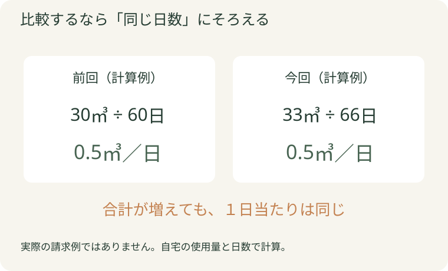
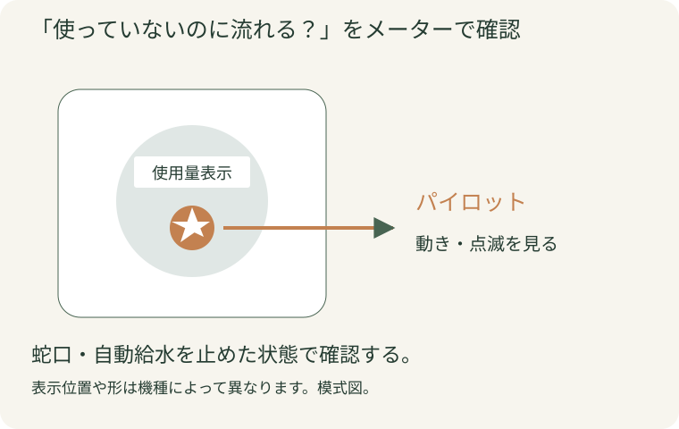
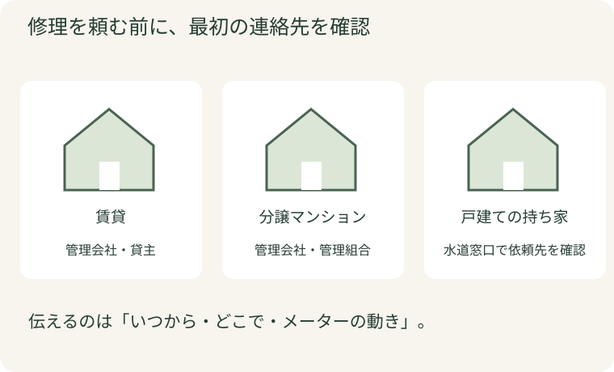

検針票を見て、「えっ、こんなに使った？」。暮らし方を変えた覚えがないのに使用量が増えると、水漏れなのか、使いすぎなのか気になりますよね。
まずは検針票の使用量、家の中の水の流れ、メーターの順で確かめましょう。メーターが止まっていても理由が分からないときに、どこへ何を伝えるかまで整理します。
節水グッズを買う前に。検針票・暮らし方・メーターを順番にチェック
公開日：
 文｜エイスケ（住宅と教育の専門家）
文｜エイスケ（住宅と教育の専門家）

検針票を見て、「えっ、こんなに使った？」。暮らし方を変えた覚えがないのに使用量が増えると、水漏れなのか、使いすぎなのか気になりますよね。
まずは検針票の使用量、家の中の水の流れ、メーターの順で確かめましょう。メーターが止まっていても理由が分からないときに、どこへ何を伝えるかまで整理します。
今回と前回、できれば前年の同じ時期の検針票を並べます。見るのは「ご使用水量」などと書かれた㎥の数字と検針期間。金額には料金改定や請求内容も関わるので、先に水の量を比べます。
日数が違う場合は、使用量を日数で割ると比べやすくなります。たとえば30㎥を60日で使った場合と、33㎥を66日で使った場合は、どちらも1日0.5㎥。合計の増加が、そのまま使い方の増加とは限りません。

次に、帰省で人が増えた、在宅の日が増えた、洗濯の回数が変わった、お風呂の湯量を変えた、庭に水をまいた、といった心当たりを家族と確認します。はっきりした理由がなければ、次の手順へ進みましょう。
蛇口を閉めても、洗濯機やトイレへ給水中ならメーターは動きます。家族へ声をかけ、家全体で水を使っていない状態にしてから確認してください。

戸建てなら敷地内のメーターボックス、集合住宅なら玄関脇などのパイプスペースにあることが多いですが、建物によって違います。住戸番号などで自宅のものを確認し、立ち入りが制限された場所や重いふたを無理に開けないでください。
水を使っていないのに動くなら、漏水の可能性があります。動いている様子を短い動画に残し、管理会社や修理の窓口へ相談しましょう。設備が自動で水を使っていないかも、確認結果と一緒に伝えます。
「今は止まっている。でも、こんなに増えた理由が分からない」。その確認結果も、相談に役立ちます。メーターが一度止まっていたことだけで、すべての水漏れを否定することはできません。流したあとだけトイレの水が止まりにくいなど、現れる時間が限られる不具合もあります。
| 見る場所 | 分解せずに確かめること |
|---|---|
| トイレ | 給水が終わる頃になっても水音が続く、便器へ水が流れ続ける |
| キッチン・洗面の収納 | 底板や給水管の接続部分に湿り・水滴がある |
| 壁・床・屋外 | 新しい水染み、普段と違う湿りや水音がある |
見つけたら、場所・時刻・直前に使った設備をメモします。タンクや配管は無理に外さず、見える範囲を写真に残してください。
排水管からの漏れは、使用量の増加とは分けて考えます。使った水が排水側で漏れているだけなら、それ自体でメーターが余計に回るわけではありませんが、床や収納を傷める原因になるため修理の相談が必要です。
「使い方に変化がなく、確認した時点ではメーターも止まっていました」と伝え、検針値や請求内容を確認してもらいましょう。窓口から記録を求められたら、同じ時刻のメーターの数字と、洗濯や湯はりなどの使用状況を残すと比較しやすくなります。原因が分からないまま、我慢して水を使う量だけを減らそうとせず、確認できたことを相談へつなげてください。
賃貸住宅は管理会社・貸主、分譲マンションは管理会社・管理組合へ連絡します。戸建ての持ち家は、検針票の水道事業者の窓口で相談先を確かめ、必要に応じて指定給水装置工事事業者などへ修理を依頼します。

電話では、検針票を手元に置き、次の順で伝えると話を進めやすくなります。
「今回の使用量が＿＿㎥で、前回は＿＿㎥でした。使い方に心当たりは＿＿。水を使っていないとき、メーターは＿＿。＿＿の場所で水音／湿りがあります。次に何を確認すればよいですか？」
修理を頼むときは、出張費・調査費・作業費を含む総額と、追加費用が出る条件を作業前に確認します。「まず調査だけならいくらか」「修理内容と金額が分かってから依頼を決められるか」も聞いておきましょう。
漏水による料金減免がある地域では、対象や期限、必要な修理記録が異なります。修理の相談と一緒に窓口へ確認し、見積書・請求書・修理内容の記録を保管してください。
① 今回と前回の検針票
② 水を使っていないときのメーターの様子
③ 水音・湿りの場所と、気づいた時刻
水が広がっている場合は、そろうのを待たず連絡してください。
料金表の改定や、請求されている項目などを確認します。今回と前回の検針票を見ながら、請求元の窓口へ聞いてみましょう。
水音や湿りが続く場合は相談してください。症状がなくても使用量が増えた理由が不明なら、検針票の窓口へ確認結果を伝えましょう。
減免の有無、対象の漏水、申請期限などは地域ごとに異なります。修理しただけで自動的に返金されるとは限らないので、必要な手続きを窓口へ確認してください。
「自宅のメーターと、検針票の保管場所はどこ？」。管理会社や水道事業者の連絡先と一緒に共有しておくと、気づいた人から相談できます。
生活者の疑問・構成の参考
確認方法の裏付け
節水型便器、水栓・シャワー、給水・排水の接続部、排水まわり
部屋・建材・設備から機能を確かめる ↗関連記事
この記事を書いた人｜エイスケ
1986年生まれ。実家の工務店・不動産に10年間従事したのち、教育の世界へ。住宅と教育、両方の視点から「豊かな暮らし」をテーマに執筆します。※本コラムは筆者個人の見解・経験に基づくものです。最終的な判断は各分野の専門家にご相談ください。